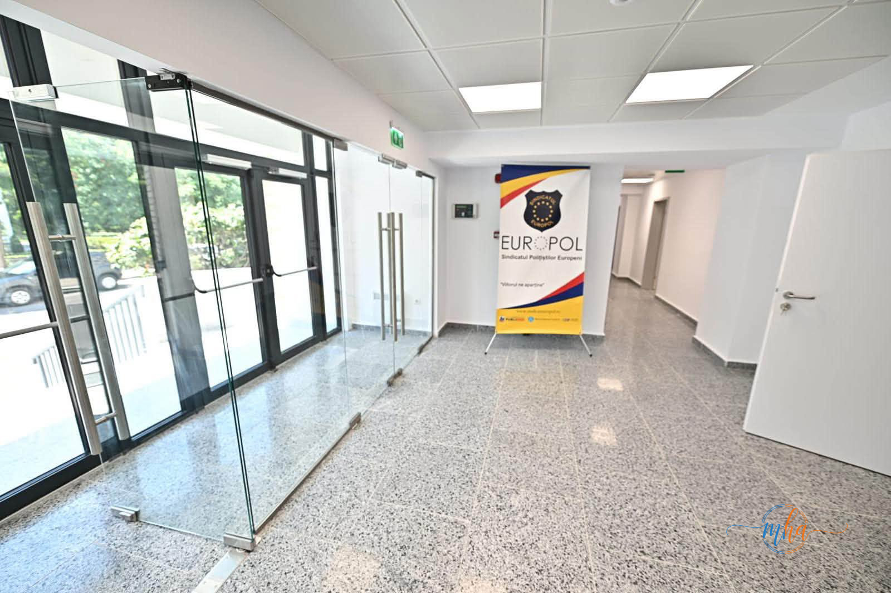
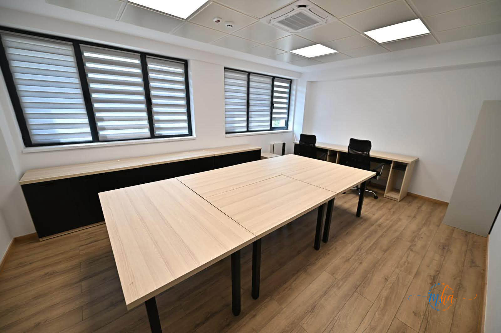
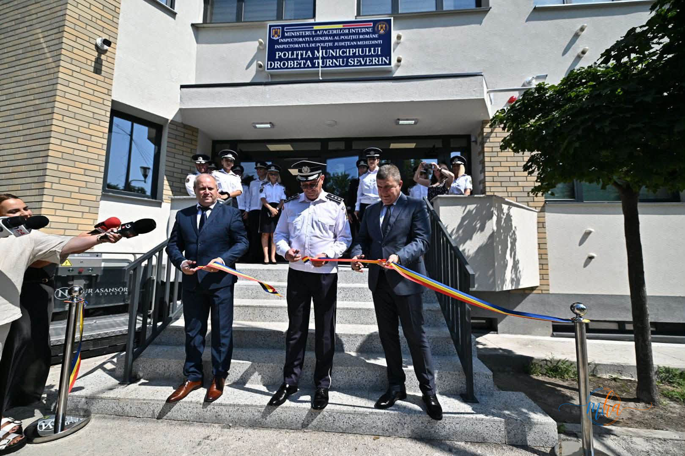
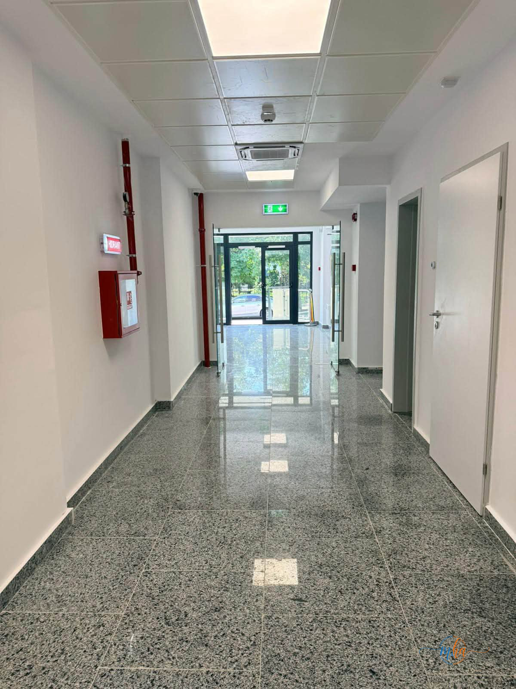
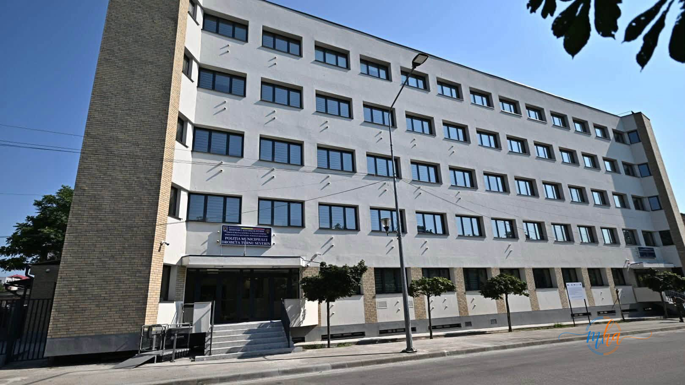
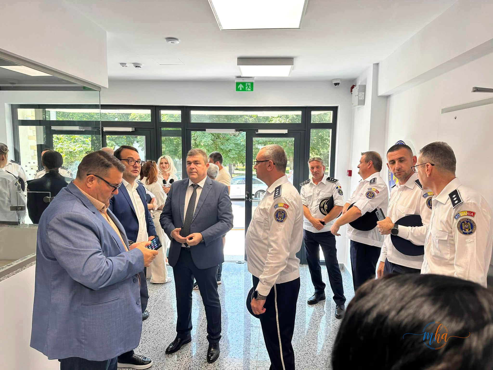
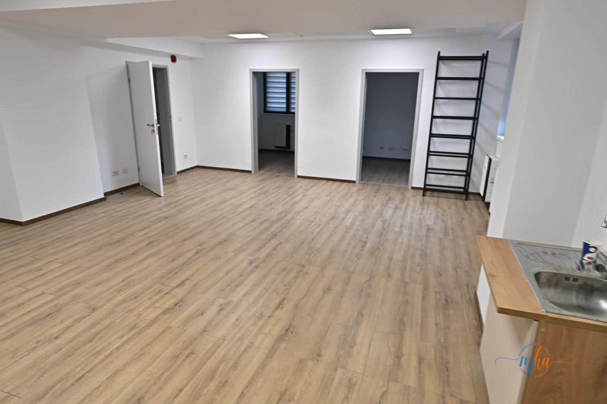

DROBETA TURNU SEVERIN – Noul sediu al Poliției Municipiului Drobeta Turnu Severin a fost inaugurat astăzi, în prezența reprezentanților autorităților locale și județene, marcând finalizarea unui proiect important de modernizare finanțat prin Planul Național de Redresare și Reziliență (PNRR).
Investiția, în valoare totală de 20.068.449,12 lei (TVA inclus), a transformat radical o clădire cu istorie în una dintre cele mai moderne unități de poliție din regiune, dotată cu tehnologii de ultimă generație în domeniul eficienței energetice și al securității.
🏠 Date despre investiție — Sediu Poliție Municipiul Drobeta Turnu Severin
- Program de finanțare: PNRR (Planul Național de Redresare și Reziliență)
- Valoare totală investiție: 20.068.449,12 lei (TVA inclus)
- Beneficiar / implementator: Inspectoratul de Poliție Județean Mehedinți
- Partener (contribuție proprie): Consiliul Județean Mehedinți
- Data inaugurării: 30 Iunie 2026
Proiect implementat de IPJ Mehedinți, cu sprijinul Consiliului Județean
Proiectul a fost implementat de Inspectoratul de Poliție Județean Mehedinți, în parteneriat cu Consiliul Județean Mehedinți, instituție care a asigurat contribuția proprie necesară derulării investiției în condițiile regulamentelor de finanțare europeană.
Colaborarea dintre cele două instituții a fost esențială pentru accesarea fondurilor și finalizarea lucrărilor în termenele asumate prin contractul de finanțare, demonstrând că parteneriatele interinstituționale reprezintă cheia succesului în atragerea și utilizarea eficientă a banilor europeni.

Ceremonia de inaugurare a reunit autorități locale, județene și conducerea IPJ Mehedinți.

Reabilitarea termică a eliminat complet pierderile de energie ale clădirii.
Ce s-a realizat: de la panouri fotovoltaice la sisteme moderne de securitate
Clădirea a trecut printr-un amplu proces de modernizare, în cadrul căruia au fost executate lucrări complexe pe mai multe componente:
- Eficientizare energetică și reabilitare termică – izolarea completă a clădirii, eliminând pierderile de căldură și reducând semnificativ consumul de energie;
- Modernizarea instalațiilor electrice – înlocuirea instalațiilor vechi cu sisteme noi, conforme normelor actuale de siguranță;
- Instalații de încălzire, climatizare și ventilație – sisteme de ultimă generație care asigură confort termic optim în toate anotimpurile;
- Montarea de panouri fotovoltaice – producerea de energie electrică din surse regenerabile direct pe acoperișul clădirii, reducând costurile operaționale;
- Sisteme moderne de management energetic – monitorizarea și controlul automatizat al consumului de energie în timp real;
- Sisteme moderne de securitate – echipamente de supraveghere și control al accesului conforme cu standardele actuale pentru unitățile de ordine publică.

Panourile fotovoltaice asigură producerea locală de energie din surse regenerabile.
Sistemele de securitate instalate respectă standardele actuale pentru unitățile de ordine publică.
Condiții mai bune pentru polițiști, servicii mai bune pentru cetățeni
Autoritățile prezente la ceremonie au subliniat că această investiție va produce efecte concrete pe două paliere esențiale.
Pe de o parte, îmbunătățirea condițiilor de muncă pentru polițiștii care activează zilnic în sediu – spații adecvate, temperaturi optime, echipamente funcționale – contribuie direct la creșterea performanței și a motivației personalului.
Pe de altă parte, calitatea serviciilor oferite cetățenilor din municipiul Drobeta Turnu Severin va crește, o clădire modernă și bine organizată reflectând respectul față de publicul care interacționează zilnic cu instituția de ordine publică.

Interioarele renovate asigură condiții optime de muncă pentru personalul poliției.

Fațada complet renovată reflectă schimbarea vizibilă adusă de investiția PNRR.
Felicitări și aprecieri în cadrul ceremoniei oficiale
În cadrul ceremoniei de inaugurare, au fost adresate felicitări tuturor celor implicați în realizarea proiectului – echipele tehnice, factorii de decizie și partenerii instituționali care au contribuit la finalizarea cu succes a lucrărilor.
Oficialitățile au evidențiat, totodată, importanța colaborării dintre instituțiile publice și a utilizării responsabile a fondurilor europene pentru modernizarea infrastructurii destinate serviciilor publice esențiale.

Reprezentanți ai IPJ Mehedinți și CJ Mehedinți au participat la ceremonia oficială de inaugurare.

Vedere de ansamblu a sediului modernizat – una dintre investițiile emblematice PNRR din județul Mehedinți.
O investiție emblematică pentru județul Mehedinți prin PNRR
Noul sediu al Poliției Municipiului Drobeta Turnu Severin se numără printre investițiile de referință realizate în județul Mehedinți prin PNRR și reprezintă un pas concret în direcția modernizării infrastructurii publice la standarde europene.
Planul Național de Redresare și Reziliență a oferit României o oportunitate istorică de a atrage fonduri substanțiale pentru eficientizarea energetică a clădirilor publice, iar Mehedințiul se numără printre județele care au valorificat această șansă prin proiecte finalizate și funcționale.
Fondurile europene prin PNRR continuă să transforme infrastructura publică din județul Mehedinți. Investiția de peste 20 de milioane de lei în sediul IPJ Mehedinți demonstrează că modernizarea instituțiilor de ordine publică nu reprezintă doar un beneficiu pentru polițiști, ci și o garanție a unor servicii mai bune pentru cetățenii din Drobeta Turnu Severin și din întregul județ. Montarea panourilor fotovoltaice și implementarea sistemelor moderne de management energetic plasează noul sediu al Poliției Municipale printre clădirile publice cu amprentă de carbon redusă din regiune. Urmăriți mehedintiazi.ro pentru cele mai recente știri despre proiectele PNRR și investițiile din Mehedinți.
Sursa: IPJ Mehedinți / CJ Mehedinți / Redactia MehedintiAzi.ro